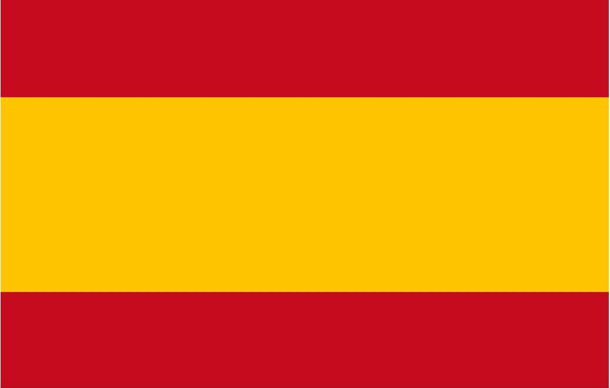

Estudié Ingeniería Electrónica, Robótica y Mecatrónica en la Universidad de Málaga. Estoy acostumbrada a trabajar en equipo, bajo presión y con plazos estrictos de tiempo. Durante mi experiencia profesional he aprendido a gestionar mi tiempo y adaptarme dinámicamente a los cambios. Actualmente, me gustaría ampliar mis conocimientos y adquirir más experiencia en las nuevas tecnologías.
(+34)633**08***
lolamartinlopez2000@gmail.com
Fulda, Alemania


Lengua MaternaNivel B2.

MATLAB | Office365| TwinCAD| TIA Portal | Visual Studio Code | Staübli| Xilinx| SolidWorks | ABB | IntelliJ
EDAG Aeromotive & Airbus Defense Space
Ingolstadt, Alemania
Ingeniera en Robótica orientada a la aviónica militar
Febrero 2023 hasta hoy
Desarrolladora de software en C++ para pruebas en Eurofighter.
EDAG Production Solutions
Fulda, Alemania
Ingeniera en prácticas para automatización industrial y gemelos digitales
Septiembre 2021 a Febrero 2023
Programadora de PLC. Programadora de robots Kawasaki y ABB para la industria de la automoción. Desarrolladora de software en aplicaciones para Windows
con C#, Unity y aplicaciones web con tecnologías como HTML5, CSS, JavaScript y Angular.
MASTER EN DESARROLLO DE SOFTWARE Y SISTEMAS INFORMÁTICOS
Universidad Internacional de la Rioja- UNIR
Febrero 2023 hasta hoy
GRADO EN INGENIERÍA DE TECNOLOGÍAS DE LA INFORMACIÓN Y CIENCIAS DE LA COMPUTACIÓN.
Hochschule Fulda. University of Applied Sciences
Septiembre 2021 a Febrero 2023
GRADO EN INGENIERÍA ELECTRÓNICA, ROBÓTICA Y MECATRÓNICA.
Universidad de Málaga-UMA
Septiembre 2018 a Septiembre 2021